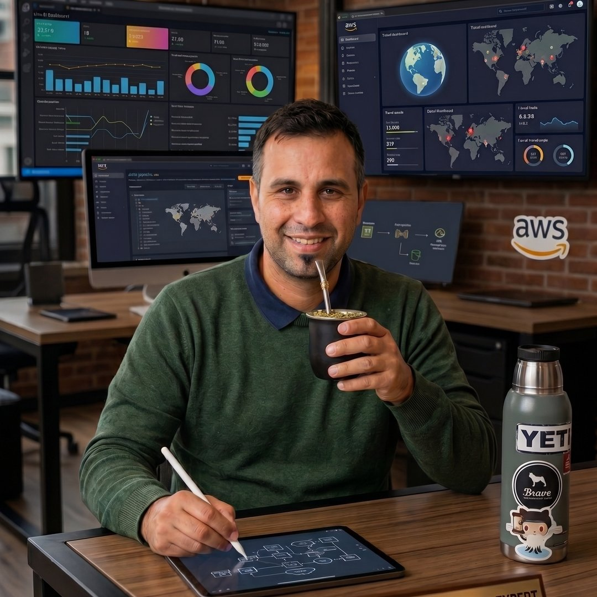

¿Tu arquitectura
está lista para la IA?
Los datos en años anteriores eran el petróleo. Hoy, los Agentes de IA transforman ese crudo en rentabilidad. ¿Estás preparado para el camino natural de evolución de tu negocio?
Master en IA
U. de San Andrés

Evolución Nativa
"Preparo los datos hoy para rentabilizar productos mañana."
−80%
Tiempo de gestión OT (Oil & Gas)
−40%
Factura cloud (serverless AWS)
2.5M
Eventos/mes procesados
50+
Pipelines migrados (compliance BCRA)
Cómo puedo ayudarte
Cinco líneas de trabajo, cada una con su propia página. Elegí la que resuelve tu problema.
Arquitectura de Datos
Diseñar, ordenar y modernizar tu plataforma de datos, con gobierno, FinOps y liderazgo fraccional.
Ver más →Inteligencia Artificial
Mentorías para acelerar y formación + acompañamiento para arrancar de cero. La IA a tu alcance.
Ver más →Automatizaciones
Agentes de IA y flujos autónomos que ejecutan el trabajo repetitivo, con AI Readiness como entrada.
Ver más →Tienda Nube
Implementación profesional de tu e-commerce en TiendaNube. Con planes y precios visibles.
Ver más →Desarrollo Web
Landing pages (incluido el generador con IA), plataformas a medida e integraciones.
Ver más →¿No sabés por dónde empezar?
Agendá una reunión y lo vemos juntos.
Casos de éxito
Resultados con métricas concretas. El detalle de cada caso vive dentro de su pilar.
Governance Multi-Plataforma
−80% en tiempo de gestión OT homologando 3 frentes analíticos.
Ver en Arquitectura → FinancieroMedallion Architecture
50+ pipelines migrados con compliance BCRA / Ley 25.326.
Ver en Arquitectura → AutomatizaciónGenerador de landings con IA
Un agente de punta a punta: brief → 3 diseños → aprobación → deploy.
Ver en Automatizaciones →Sobre mí
Arquitecto de datos y estratega de IA.
Ayudo a empresas y pymes a ordenar sus datos y a aplicar IA con criterio de negocio. Estas son mis credenciales.
Master en Inteligencia Artificial
Universidad de San Andrés
Enfoque avanzado en agentes inteligentes y optimización de valor de negocio mediante IA.
Licenciado en Big Data
Universidad de Palermo
Fundamentación teórica y práctica en el manejo de grandes volúmenes de información.
AWS / IBM Certification Stack
Validaciones internacionales en infraestructura cloud, análisis de datos y pensamiento arquitectónico de clase mundial.
Preguntas frecuentes
¿Trabajás con pymes o solo con grandes empresas?
Con ambas. El alcance de cada servicio se ajusta al tamaño y al presupuesto del negocio.
¿Necesito tener los datos ordenados para empezar?
No; el diagnóstico parte del estado actual, por desordenado que esté, y prioriza quick wins.
¿Puedo aprender a usar IA aunque arranque de cero?
Sí; el pilar de Inteligencia Artificial incluye formación + acompañamiento sin conocimientos previos.
¿Cómo son los precios?
Cada servicio cierra en "Consultar / Agendar" para acordar alcance. La única excepción es Tienda Nube, que tiene precios visibles por plan.
¿Desafiamos el status quo?
Agendá una reunión y vemos cómo ordenar tus datos y aplicar IA en tu negocio.